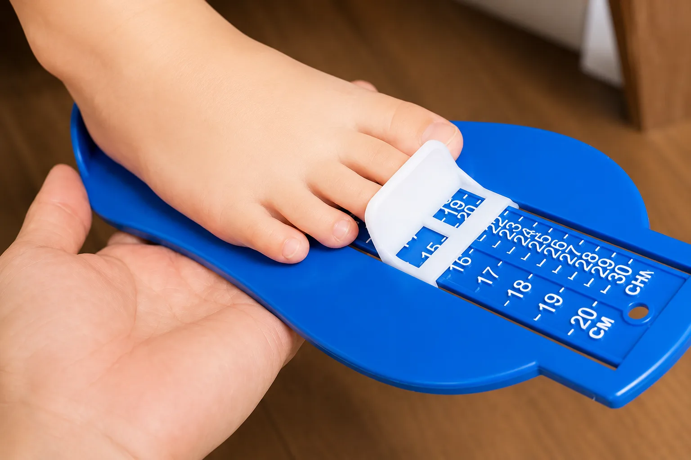

屋外を歩き始めたら、つま先を守り、滑りにくく、足の動きを妨げにくい靴を選びます。成長のために大きめを買うのではなく、今の足を測り、靴の中で足が前後左右に動きすぎないことを確認します。
子どもは、靴が小さくなっても上手に言葉にできないことがあります。靴を買う日だけでなく、家庭で中敷きや足の赤みを見てあげることも足育のひとつです。
初めて靴を履いた赤ちゃんが、その場でハイハイに戻ったり泣いたりすることがあります。足裏には感覚神経（メカノレセプター）があり、裸足で受け取っていた地面の情報が靴で変わることに戸惑うためと考えられます。多くの場合は家に帰るとすぐに慣れますが、日頃から足裏をやさしく触れて慣らしてあげると、初めての靴にもなじみやすくなります。
- 足長・足幅・足囲：左右を測り、表示サイズだけで決めない。
- つま先：指が動ける余裕があり、形が足趾を圧迫しない。
- 踵：踵まわりが大きく浮かず、後ろから支えられる。
- 固定：紐や面ファスナーで甲を調整でき、足が前へ滑りにくい。
- 曲がる位置：靴底が、足の指の付け根に近い位置で曲がる。
最後は立位と歩行で確認します。座ったままの試着だけでは、足が靴の中でどう動くか分かりにくいためです。
価格も、買い替えの頻度も、ご家庭には大きな負担です。だからこそ高価な一足を一方的にすすめるのではなく、今の足に何が必要か、家庭で何を確認できるかまでお伝えします。
靴がよくても、踵を合わせず締め具をゆるめたままでは、足を十分に支えられません。選び方と同じくらい、毎日の履き方を習慣にすることが大切です。
- 中敷きを外して立たせたとき、つま先の余裕が少ない
- 足趾や甲に赤み・靴ずれがある
- 靴を履きたがらない、すぐ脱ぐ
- 急に歩き方が変わった、よく転ぶようになった
- 踵が大きくすり減った、靴が変形した
歩き始めの時期は足の成長が早いため、少なくとも月に一度は保護者の方がフィットをご確認ください。気になる変化が続く場合は、医療機関へご相談ください。
買い替えの目安は、3歳までは約3か月ごと、6歳までは約4か月ごと、7歳からは約6か月ごとに1サイズアップが基準です。多少のずれは問題ありません。反対に「つま先にまだ余裕があり、成長が遅いのでは」とご心配される方もいますが、成長のペースには個人差があります。気になるときはご相談ください。
この5点と買い替えの目安をまとめたPDFをご用意しています。足と靴のセルフチェックリストをダウンロード（PDF）
靴下も足育のひとつです。ご相談でよくいただく3つの疑問には、こうお答えしています。
- 滑り止めは必要？：靴の中で足は伸び縮みします。裏全体を覆うような滑り止めは足の動きを妨げることがあるため、基本的にはないものをおすすめします。
- サイズは大きめでよい？：大人が2cm大きい靴下を履くと余ってしまうように、11.5cmの足に3cm大きい靴下は大きすぎます。足のサイズに合ったものを選びます。
- 裸足で靴を履かせてよい？：幼児の足は汗をかきやすく皮膚も弱いため、靴下で皮膚を守り、靴も清潔に保てます。毎日洗える靴下が、靴の中の衛生を守る役割をします。
23.0cmの細い足に、24.5cmの学校靴
公式Facebookでは、13歳のお子さまの足を測るとJIS規格で23.0cmのDまたはE相当だった一方、購入されていた学校靴は24.5cmだったというご相談例を紹介しています。大きなサイズなら安心とは限らず、靴の中で足が動きすぎることもあります。
表示サイズだけでなく、足長、幅、踵の収まり、甲の固定を確かめ、履いて歩く姿まで見ることが大切です。ここに記載した数値は公開された一例であり、ほかのお子さまに当てはまる基準ではありません。
今の足を測り、中敷きの上で余裕を見て、踵を合わせて履かせてください。買い替え時期も、靴の数字だけでなく足と靴の状態から考えます。
日独小児靴学研究会で子どもの足と靴を学んだシューフィッターのわたしが、ファーストシューズから成長期まで相談を承ります。足サイズ、フットプリント（目安として3歳以上）、写真・動画、歩行、現在の靴を確認し、お母さん・お父さんと一緒に靴選びと履き方を考えます。

お子さまの足を、一緒に見てみませんか。
今履いている靴もお持ちください。家庭での確認方法までお伝えします。